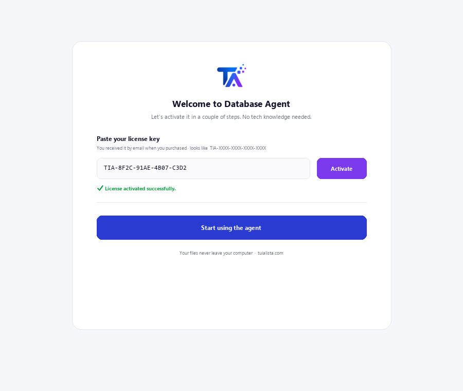
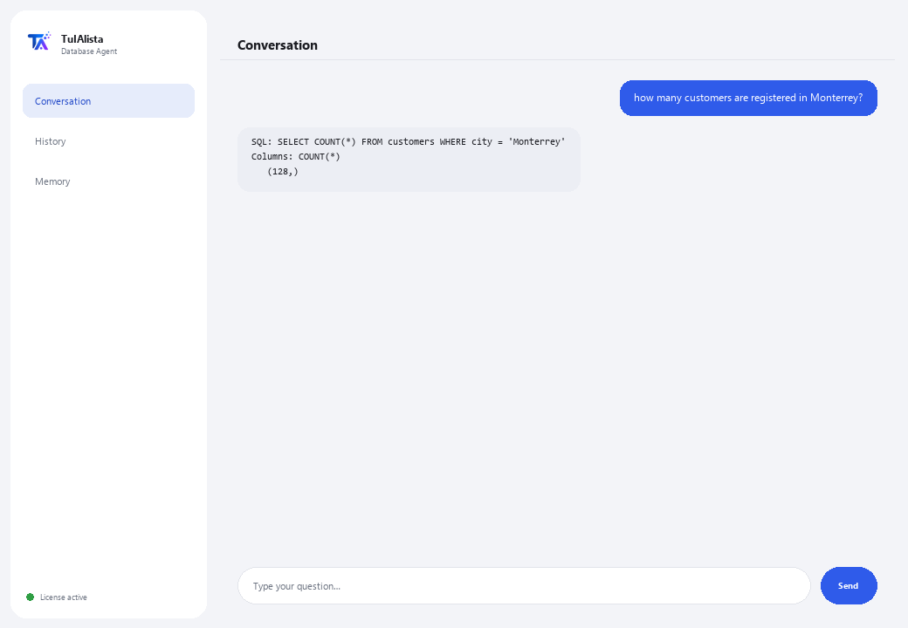

Database Agent
Turns your questions into queries against your database, without you needing to know SQL. Read-only: it never modifies or damages your data.
What does it solve and what do you need?
In many companies, important data lives in a database, but only the technical team knows how to query it. Every time someone needs a number, they have to ask IT to write a query and wait. This agent translates your question into a SELECT query and shows you the result — with no risk of damaging anything.
- You need: your license key (TIA-XXXX-XXXX-XXXX-XXXX) and your database connection details (SQLite, PostgreSQL or MySQL). A technical setup — usually done by your IT team.
- First result: install, activate your license, configure the connection, and just ask questions in plain language — there are no commands to learn.
- Your database never leaves your infrastructure — the connection and queries run locally.
soporte@tuialista.com or visit tuialista.com/soporte — we usually reply the same business day.1 What this agent does
You tell it which database to connect to, then ask it questions in plain language:
- Translates your question into a SELECT query (read-only) and runs it.
- Shows you the SQL query it generated and the result.
- Never runs operations that modify data (INSERT, UPDATE, DELETE, DROP...): a security validator blocks any query that isn't read-only.
- Works with SQLite, PostgreSQL and MySQL (SQLite works out of the box; MySQL and PostgreSQL require installing their extra).
The result: anyone authorized can query the data without depending on IT to write the query, and with no risk of damaging anything.
2 Installation
For Windows. This agent has one extra step compared to the folder-reading agents: the database connection is configured separately.
Download the installer from tuialista.com/descargar (Database agent) and open it. It creates a desktop shortcut with the logo — no Python or terminal needed.
Double-click the new icon. Paste your license key (you received it by email when you bought it) and click Activate. Unlike other agents, it won't ask you to choose a folder — this agent connects to a database, not to local files.
Set the environment variables TARGET_DB_TYPE (sqlite, postgres or mysql) and TARGET_DB_URL with your database's details. For SQLite you only need the path to the .db file. This step is usually done by the IT team.

3 How to use it
The agent opens a chat window, like a messaging app — not a programmer's black screen. There are no commands to memorize: you type your question in plain language in the text box below, hit Send (or Enter), and the agent generates the query, runs it, and shows you the SQL, the columns and the results:

The agent gives the AI the schema of your tables (table and column names) to build the correct query. Data is only read when the SELECT query runs, and it's capped at a maximum of 100 rows per reply. Type exit (or salir) to finish.
4 Common use examples
A quick count
how many orders were placed last month?
A filtered total
what did sales add up to in the north region this year?
A top-N list
give me the 5 best-selling products by quantity
A join across tables
which customers haven't placed any orders in the last 90 days? — the agent builds the SELECT with the necessary JOINs based on your schema and shows you the result (up to 100 rows).
5 Frequently asked questions
Can it damage or delete my data?
What databases does it support?
Does my data get uploaded to the internet?
Do I need internet to use it?
Why does it show me the SQL it generated?
How many results does it return?
What language does it reply in?
What happens if the agent generates incorrect SQL?
Can I switch databases?
Does it need a special database user?
6 Troubleshooting
“Unsupported DB type”
Error connecting to MySQL or PostgreSQL
SQLite: “unable to open database file”
“Only read queries (SELECT) are allowed”
It says “Invalid license” or asks to reconnect
“No AI providers configured”
None of these fixed your problem? Write to us directly — we'll gladly look into it with you.
soporte@tuialista.com or visit tuialista.com/soporte — we usually reply the same business day.7 Privacy and confidentiality
Your database and its data never leave your infrastructure.
- The agent connects to your database locally (on your machine or your network) and runs queries there. Results aren't uploaded to any server.
- Only the schema (table and column names) and your question are sent to the AI to draft the SELECT query. The data the query returns is never transmitted to the AI engine.
- The only thing that travels over the internet is: (1) a check that your license is active, and (2) the schema + your question, to generate the SQL.